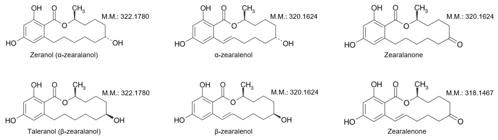

Technical Letters · TL04 (replaces TL02/2015)
Edition v2.0, 2015 (version 2.0) · effective 7 May 2015 · superseded
Retrieved on 25 November 2026 from https://www.wada-ama.org/sites/default/files/resources/files/tl04_zeranol.pdf
Editions: v3.0, 2021 (current) · v2.0, 2015
p. 1
ANALYSIS AND REPORTING OF ZERANOL
*The approval by the WADA Executive Committee is applicable only to Technical Letters issued after November 2019.
The World Anti-Doping Agency wishes to draw the attention of the Laboratories to the following remarks and instructions on the analysis and reporting of zeranol.
Published scientific evidence¹ has indicated that findings of zeranol in urine could be related to the consumption of mycotoxin contaminated food. Moreover, it is possible to establish the mycotoxin source of zeranol analytically by testing for zearalenone² and its metabolites α-zearalenol and β-zearalenol, which are not excreted in cases of zeranol administration.
In cases where Laboratories find zeranol in conjunction with elevated ratios of zearalenone/zeranol, αzearalenol/zeranol and/or β-zearalenol/taleranol in a urine Sample, the detection of zeranol is the result of the consumption of mycotoxin-contaminated food, and therefore the finding should not be reported as an Adverse Analytical Finding for zeranol.

When zeranol is detected in a urine Sample, Laboratories must also test for the presence of zearalenone, α-zearalenol and/or β-zearalenol as well as monitor the ratios of:
- zearalenone/zeranol(α-zearalanol);
- α-zearalenol/zeranol(α-zearalanol), and/or
- β-zearalenol/taleranol(β-zearalanol).
Since zearalenone and both α- and β-zearalenol (all containing the C-C double bond) are not known to
¹Thevis M, Fusshöller G, Schänzer W. "Zeranol: doping offence or mycotoxin? A case-related study". Drug Test Anal. 3(11-12): 777-83, 2011.
²Zearalenone (or zearalenon), also known as F-2 mycotoxin, occurs mainly in corn, sorghum, wheat, barley but also in banana's, bean leaves, etc. Zearalenone is produced during the fermentation of stored grain by the moulds Fusarium roseum, F. culmorum, F. moniliforme and F. graminiarum. Meat consumed from animals fed with mycotoxin-contaminated grains may also lead to the urinary excretion of zearalenone and its minor metabolite zeranol.
p. 2
*The approval by the WADA Executive Committee is applicable only to Technical Letters issued after November 2019.
be produced from zeranol, these ratios should be close to 0 in cases of zeranol administration, whereas they would be elevated when the zeranol finding is due to mycotoxin contamination.
Should you have any further questions, please do not hesitate to contact the WADA Science Department.
Retrieved on 25 November 2026 from https://www.wada-ama.org/sites/default/files/resources/files/tl04_zeranol.pdf